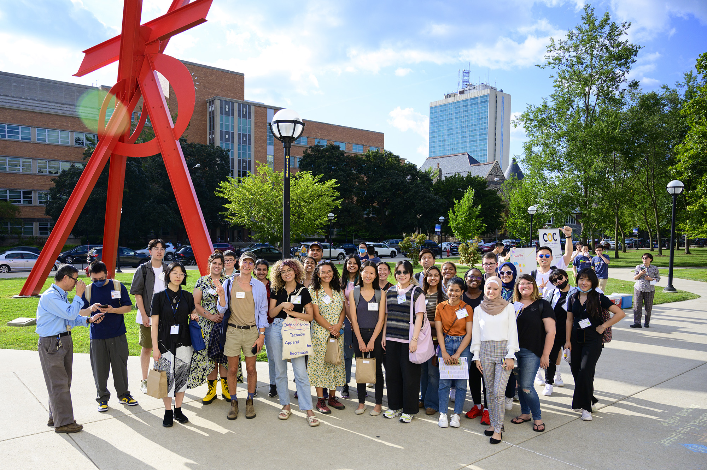
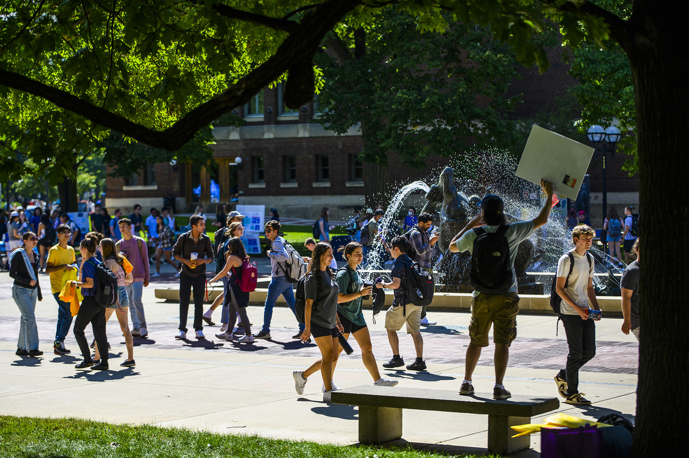
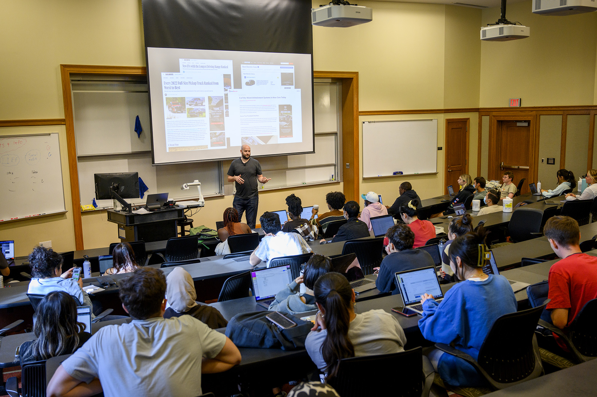

Michigan is Our Home
Join a vibrant community of over 4,000 first-generation students at U-M, supported by dedicated resources, programs, and events to help you navigate your college journey.

The First-Generation Students website at the University of Michigan provides comprehensive support for students who are the first in their families to attend college. It offers resources such as academic advising, financial aid guidance, mentorship programs, and career development services.
The First-Gen Gateway serves as a hub for personalized support, and students can participate in community-building events like First-Gen Week and graduation celebrations. The site emphasizes empowerment, networking, and overcoming challenges unique to first-generation students.
Our Resources
- First-Gen Gateway: Your hub for personalized support and guidance. Visit our team for advising, workshops, and connections to campus resources
- Paying for School: Learn about scholarships, grants, and financial literacy workshops tailored for first-gen students
Upcoming Events & Workshops
Stay connected and involved through our events designed to help you succeed and connect with the first-gen community.
- First-Generation Celebration Week | Date: November 8-12, 2025 | Location: Various campus venues | Activities: Panels, networking sessions, and fun social events
- Financial Wellness Workshop | Date: March 15, 2025 | Location: Ross School of Business | Learn how to manage your college expenses effectively.
View complete calendar

Student Success Stories
Hear from fellow first-gen students who have navigated the U-M experience successfully and share their insights and advice.
"Being a first-gen student at U-M has been challenging, but the resources and mentorship programs have made a huge difference in my journey."
View our student stories

FAQs
- What defines a first-generation college student at U-M?
If neither of your parents or guardians has obtained a four-year degree, you are considered a first-gen student.
- How do I apply for first-gen scholarships?
Visit our financial aid page for details on available funding options and application deadlines.